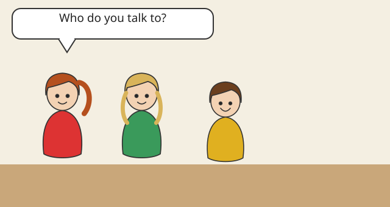

Who do you talk to?
Mit einem KI-Tutor lernen
Ein KI-Tutor erklärt dir diese Seite und hilft dir bei den Aufgaben. Wähl deinen Assistenten:
Mit Claude öffnen Mit ChatGPT öffnen Mit Mistral Vibe öffnen
Du nutzt dein eigenes Konto beim Anbieter. Der Assistent ist kein Angebot von lernapps.net: lernapps liefert nur Inhalte und Aufgaben. Die Wahl gilt für alle Seiten, nur auf diesem Gerät.
Ellie fragt Sophie

© CC-BY-4.0Von links: Ellie (roter Pferdeschwanz) fragt, daneben Sophie (Zöpfe) und Peter (gelbe Jacke).
Ellie fragt Sophie: „Who do you talk to?“ Sophie übersetzt sich die Frage im Kopf ins Deutsche.
Aufgabe
Lösung
Mit wem sprichst du? richtige Antwort
To heißt hier „mit“, denn man spricht mit jemandem. Auf Deutsch steht „mit“ vorn.
Wer spricht zu dir?
Das wäre Who talks to you. Dort steht kein do, und you steht am Ende.
Wen sprichst du?
Es fehlt die Präposition. Im Satz steht to am Ende.
Auf Deutsch steht die Präposition vorn, im Englischen am Ende.
Das kannst du danach: Du fragst nach Personen und Orten mit einer Präposition und setzt sie an das Ende.
Die Präposition bleibt hinten
Auf der Satzleiste gibt es eine braune Karte für die Präposition, zum Beispiel to, with, from oder for. Sie bleibt in der Frage am Ende liegen. Alles davor ist wie bisher: Fragewort, Helfer, Subjekt, Verb.
 © CC-BY-4.0
© CC-BY-4.0Die braune Karte to bleibt am Ende der Frage.
| Deutsch | Englisch |
|---|---|
| Mit wem sprichst du? | Who do you talk to? |
| Woher kommst du? | Where do you come from? |
Merke
Fragewort, Helfer, Subjekt, Verb, Präposition. Auf Deutsch steht die Präposition vorn, im Englischen bleibt sie am Ende: Who do you talk to?
| Englisch | Deutsch |
|---|---|
| talk to | sprechen mit |
| play with | spielen mit |
| live with | wohnen bei |
| study with | lernen mit |
| eat with | essen mit |
| come from | kommen aus |
| for | für |
| who | wer / wen |
| where | wo / woher |
| book | Buch |
| this | dieses / das |
| at school | in der Schule |
| at | bei / an |
| English | Englisch |
| lunch | Mittagessen |
Übung
Aufgabe
Lösung
Richtige Antwort: 1. Who, 2. does, 3. Peter, 4. play, 5. with
Die Präposition with bleibt am Ende. Davor stehen Fragewort, Helfer, Subjekt und Verb.
Aufgabe
Wähle die richtige Präposition für das Ende der Frage.
Tipp
Die Präposition steht am Ende der Frage. Welches Wort passt zu dem Verb?
- Mit wem spielst du? → Who do you play …?
- Bei wem wohnt Peter? → Who does Peter live …?
- Mit wem spricht Ellie? → Who does Ellie talk …?
- Für wen ist dieses Buch? → Who is this book …?
Lösung
- Who do you play with?
- Who does Peter live with?
- Who does Ellie talk to?
- Who is this book for?
Aufgabe
Schreibe die ganze Frage. Die Präposition steht am Ende.
Tipp
Schreibe zuerst Fragewort, Helfer, Subjekt und Verb. Die Präposition kommt zuletzt.
- who · Amir · play · with
- where · Peter · come · from
- who · you · study · with
- who · Sophie · eat · lunch · with
Lösung
- Who does Amir play with?
- Where does Peter come from? (auch richtig: Where is Peter from?)
- Who do you study with?
- Who does Sophie eat lunch with?
Aufgabe
In jeder Frage steckt ein Fehler. Schreibe die Frage richtig.
Tipp
Prüfe, wo die Präposition steht und ob der Helfer da ist.
- With who do you play?
- Where you come from?
Lösung
- Who do you play with?
- Where do you come from?
Aufgabe
Schreibe die Frage auf Englisch.
Tipp
Übersetze zuerst Fragewort, Helfer, Subjekt und Verb. Die Präposition kommt ans Ende.
- Bei wem wohnst du?
- Woher kommt Sophie?
- Mit wem lernt Ellie Englisch?
Lösung
- Who do you live with?
- Where does Sophie come from? (auch richtig: Where is Sophie from?)
- Who does Ellie study English with? (auch richtig: Who does Ellie learn English with?)
Aufgabe
Hör zu und schreibe, was du hörst.
- KI
- KI
- KI
Lösung
- Who do you eat lunch with?
- Who does Amir talk to at school?
- Where does Mr Hill come from?
Fragen im Klassenzimmer
Aufgabe
Hör zu, sprich nach und nimm dich auf. Vergleiche dann mit dem Original.
Tipp
Hör die Frage zuerst. Sprich dann langsam nach.
- Who does Peter play with?KI
- Who do you live with?KI
- Who does Ellie study with?KI
Zum Aufnehmen braucht diese Aufgabe JavaScript. Die Beispiele kannst du auch ohne anhören.
Lösung
- Who does Peter play with?
- Who do you live with?
- Who does Ellie study with?
Offene Aufgabe
Amir interviewt die Klasse. Schreibe drei Fragen, die mit einer Präposition am Ende hängen, zum Beispiel mit to, with oder from.
Eine gute Antwort enthält:
Lösung
Who do you talk to? Where does Peter come from? Who does Ellie play with?
Wie es weitergeht
Die Klasse hat viele Fragen gestellt. Am nächsten Tag will Mr Hill wissen, was die Kinder gestern getan haben. Er fragt: „Did you play football yesterday?“ Hier steht did statt do. Warum, zeigt das nächste Kapitel.
Fehler gefunden oder eine Idee für diese App?